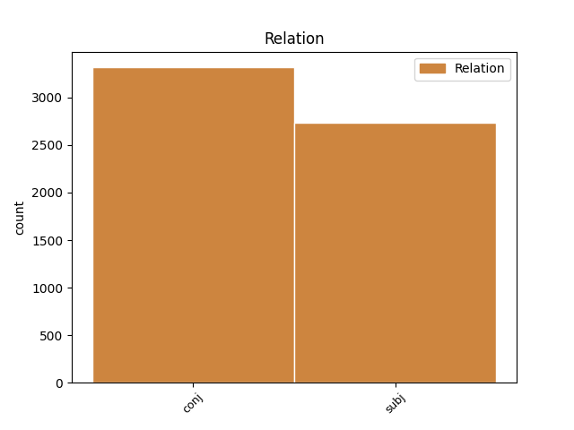
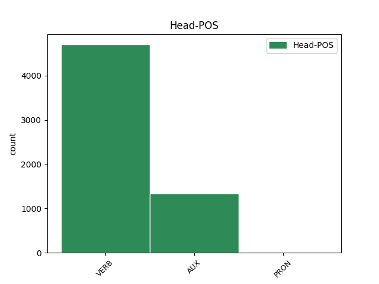
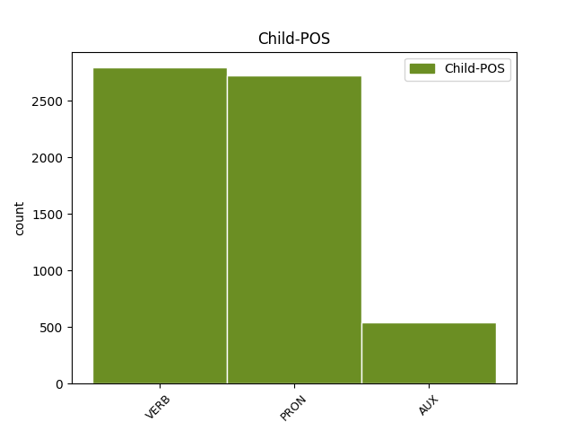

Distribution of features within this leaf



Agreement Rules sorted by frequency.
- When the dependent token is the conjunct(conj) of the head token,
1 Galtungs _ _ _ _ 0 _ _ _
2 atšķirības _ _ _ _ 0 _ _ _
3 starp _ _ _ _ 0 _ _ _
4 dažādām _ _ _ _ 0 _ _ _
5 vardarbības _ _ _ _ 0 _ _ _
6 formām _ _ _ _ 0 _ _ _
7 raksturo _ _ _ _ 0 _ _ _
8 šādi _ _ _ _ 0 _ _ _
9 : _ _ _ _ 0 _ _ _
10 tiešā _ _ _ _ 0 _ _ _
11 vardarbība _ _ _ _ 0 _ _ _
12 ir _ _ _ _ 0 _ _ _
13 notikums _ _ _ _ 0 _ _ _
14 / _ _ _ _ 0 _ _ _
15 akts _ _ _ _ 0 _ _ _
16 , _ _ _ _ 0 _ _ _
17 strukturāla _ _ _ _ 0 _ _ _
18 vardarbība _ _ _ _ 0 _ _ _
19 ir _ _ _ _ 0 _ _ _
20 process _ _ _ _ 0 _ _ _
21 , _ _ _ _ 0 _ _ _
22 kultūras _ _ _ _ 0 _ _ _
23 vardarbība _ _ _ _ 0 _ _ _
24 nemainās mainīties VERB vmyipi330ay Evident=Fh|Mood=Ind|Person=3|Polarity=Neg|Reflex=Yes|Tense=Pres|VerbForm=Fin|Voice=Act 0 _ _ _
25 tik _ _ _ _ 0 _ _ _
26 ātri _ _ _ _ 0 _ _ _
27 un _ _ _ _ 0 _ _ _
28 ilgstoši _ _ _ _ 0 _ _ _
29 saglabā saglabāt VERB vmnipt230an Evident=Fh|Mood=Ind|Person=3|Polarity=Pos|Tense=Pres|VerbForm=Fin|Voice=Act 24 conj _ LvtbNodeId=a-z99-p16s7w29
30 savu _ _ _ _ 0 _ _ _
31 pamatbūtību _ _ _ _ 0 _ _ _
32 . _ _ _ _ 0 _ _ _
1 Kultūras _ _ _ _ 0 _ _ _
2 vardarbība _ _ _ _ 0 _ _ _
3 aizplīvuro _ _ _ _ 0 _ _ _
4 / _ _ _ _ 0 _ _ _
5 aizsedz _ _ _ _ 0 _ _ _
6 mūsu _ _ _ _ 0 _ _ _
7 morāles _ _ _ _ 0 _ _ _
8 kodu _ _ _ _ 0 _ _ _
9 realitāti _ _ _ _ 0 _ _ _
10 vai _ _ _ _ 0 _ _ _
11 iespaidu _ _ _ _ 0 _ _ _
12 , _ _ _ _ 0 _ _ _
13 ka _ _ _ _ 0 _ _ _
14 mēs mēs PRON pp10pnn Case=Nom|Number=Plur|Person=1|PronType=Prs 17 subj _ LvtbNodeId=a-z99-p16s5w14
15 ne _ _ _ _ 0 _ _ _
16 vienmēr _ _ _ _ 0 _ _ _
17 spējam spēt VERB vonipi11pan Evident=Fh|Mood=Ind|Number=Plur|Person=1|Polarity=Pos|Tense=Pres|VerbForm=Fin|Voice=Act 0 _ _ _
18 redzēt _ _ _ _ 0 _ _ _
19 vardarbības _ _ _ _ 0 _ _ _
20 aktu _ _ _ _ 0 _ _ _
21 . _ _ _ _ 0 _ _ _
Disagree Examples:
1 Jums _ _ _ _ 0 _ _ _
2 nav būt AUX vcnipii30ay Evident=Fh|Mood=Ind|Person=3|Polarity=Neg|Tense=Pres|VerbForm=Fin|Voice=Act 0 _ _ _
3 sveša _ _ _ _ 0 _ _ _
4 vilšanās _ _ _ _ 0 _ _ _
5 , _ _ _ _ 0 _ _ _
6 taču _ _ _ _ 0 _ _ _
7 spējat spēt VERB vonipi12pan Evident=Fh|Mood=Ind|Number=Plur|Person=2|Polarity=Pos|Tense=Pres|VerbForm=Fin|Voice=Act 2 conj _ LvtbNodeId=a-c23-p13s8w7
8 par _ _ _ _ 0 _ _ _
9 to _ _ _ _ 0 _ _ _
10 ātri _ _ _ _ 0 _ _ _
11 aizmirst _ _ _ _ 0 _ _ _
12 . _ _ _ _ 0 _ _ _
1 Taču _ _ _ _ 0 _ _ _
2 , _ _ _ _ 0 _ _ _
3 iebraucot _ _ _ _ 0 _ _ _
4 pagalmā _ _ _ _ 0 _ _ _
5 , _ _ _ _ 0 _ _ _
6 iznāca iznākt VERB vmnisi130an Evident=Fh|Mood=Ind|Person=3|Polarity=Pos|Tense=Past|VerbForm=Fin|Voice=Act 0 _ _ _
7 ķeza _ _ _ _ 0 _ _ _
8 : _ _ _ _ 0 _ _ _
9 mēs _ _ _ _ 0 _ _ _
10 kaut _ _ _ _ 0 _ _ _
11 kā _ _ _ _ 0 _ _ _
12 nebijām būt AUX vcnisii1pay Evident=Fh|Mood=Ind|Number=Plur|Person=1|Polarity=Neg|Tense=Past|VerbForm=Fin|Voice=Act 6 conj _ LvtbNodeId=a-c33-p148s2w12
13 pietiekami _ _ _ _ 0 _ _ _
14 labi _ _ _ _ 0 _ _ _
15 nostiprinājuši _ _ _ _ 0 _ _ _
16 vienu _ _ _ _ 0 _ _ _
17 vārtu _ _ _ _ 0 _ _ _
18 pusi _ _ _ _ 0 _ _ _
19 un _ _ _ _ 0 _ _ _
20 pēkšņa _ _ _ _ 0 _ _ _
21 vēja _ _ _ _ 0 _ _ _
22 brāzma _ _ _ _ 0 _ _ _
23 uzgrūda _ _ _ _ 0 _ _ _
24 tos _ _ _ _ 0 _ _ _
25 uz _ _ _ _ 0 _ _ _
26 mašīnas _ _ _ _ 0 _ _ _
27 sāniem _ _ _ _ 0 _ _ _
28 . _ _ _ _ 0 _ _ _
1 Taču _ _ _ _ 0 _ _ _
2 , _ _ _ _ 0 _ _ _
3 iebraucot _ _ _ _ 0 _ _ _
4 pagalmā _ _ _ _ 0 _ _ _
5 , _ _ _ _ 0 _ _ _
6 iznāca _ _ _ _ 0 _ _ _
7 ķeza _ _ _ _ 0 _ _ _
8 : _ _ _ _ 0 _ _ _
9 mēs _ _ _ _ 0 _ _ _
10 kaut _ _ _ _ 0 _ _ _
11 kā _ _ _ _ 0 _ _ _
12 nebijām būt AUX vcnisii1pay Evident=Fh|Mood=Ind|Number=Plur|Person=1|Polarity=Neg|Tense=Past|VerbForm=Fin|Voice=Act 0 _ _ _
13 pietiekami _ _ _ _ 0 _ _ _
14 labi _ _ _ _ 0 _ _ _
15 nostiprinājuši _ _ _ _ 0 _ _ _
16 vienu _ _ _ _ 0 _ _ _
17 vārtu _ _ _ _ 0 _ _ _
18 pusi _ _ _ _ 0 _ _ _
19 un _ _ _ _ 0 _ _ _
20 pēkšņa _ _ _ _ 0 _ _ _
21 vēja _ _ _ _ 0 _ _ _
22 brāzma _ _ _ _ 0 _ _ _
23 uzgrūda uzgrūst VERB vmnist130an Evident=Fh|Mood=Ind|Person=3|Polarity=Pos|Tense=Past|VerbForm=Fin|Voice=Act 12 conj _ LvtbNodeId=a-c33-p148s2w23
24 tos _ _ _ _ 0 _ _ _
25 uz _ _ _ _ 0 _ _ _
26 mašīnas _ _ _ _ 0 _ _ _
27 sāniem _ _ _ _ 0 _ _ _
28 . _ _ _ _ 0 _ _ _
1 Šoferis _ _ _ _ 0 _ _ _
2 to _ _ _ _ 0 _ _ _
3 neredzēja redzēt VERB vmnist330ay Evident=Fh|Mood=Ind|Person=3|Polarity=Neg|Tense=Past|VerbForm=Fin|Voice=Act 0 _ _ _
4 , _ _ _ _ 0 _ _ _
5 jo _ _ _ _ 0 _ _ _
6 viņam _ _ _ _ 0 _ _ _
7 skatu _ _ _ _ 0 _ _ _
8 aizsedza _ _ _ _ 0 _ _ _
9 pie _ _ _ _ 0 _ _ _
10 vārtiem _ _ _ _ 0 _ _ _
11 augošais _ _ _ _ 0 _ _ _
12 kuplais _ _ _ _ 0 _ _ _
13 pīlādzis _ _ _ _ 0 _ _ _
14 , _ _ _ _ 0 _ _ _
15 bet _ _ _ _ 0 _ _ _
16 es _ _ _ _ 0 _ _ _
17 nepaspēju paspēt VERB vpnisi11say Evident=Fh|Mood=Ind|Number=Sing|Person=1|Polarity=Neg|Tense=Past|VerbForm=Fin|Voice=Act 3 conj _ LvtbNodeId=a-c33-p148s3w17
18 vārtus _ _ _ _ 0 _ _ _
19 noķert _ _ _ _ 0 _ _ _
20 – _ _ _ _ 0 _ _ _
21 un _ _ _ _ 0 _ _ _
22 tā _ _ _ _ 0 _ _ _
23 mašīna _ _ _ _ 0 _ _ _
24 salauza _ _ _ _ 0 _ _ _
25 vārtus _ _ _ _ 0 _ _ _
26 . _ _ _ _ 0 _ _ _
1 Šoferis _ _ _ _ 0 _ _ _
2 to _ _ _ _ 0 _ _ _
3 neredzēja _ _ _ _ 0 _ _ _
4 , _ _ _ _ 0 _ _ _
5 jo _ _ _ _ 0 _ _ _
6 viņam _ _ _ _ 0 _ _ _
7 skatu _ _ _ _ 0 _ _ _
8 aizsedza _ _ _ _ 0 _ _ _
9 pie _ _ _ _ 0 _ _ _
10 vārtiem _ _ _ _ 0 _ _ _
11 augošais _ _ _ _ 0 _ _ _
12 kuplais _ _ _ _ 0 _ _ _
13 pīlādzis _ _ _ _ 0 _ _ _
14 , _ _ _ _ 0 _ _ _
15 bet _ _ _ _ 0 _ _ _
16 es _ _ _ _ 0 _ _ _
17 nepaspēju paspēt VERB vpnisi11say Evident=Fh|Mood=Ind|Number=Sing|Person=1|Polarity=Neg|Tense=Past|VerbForm=Fin|Voice=Act 0 _ _ _
18 vārtus _ _ _ _ 0 _ _ _
19 noķert _ _ _ _ 0 _ _ _
20 – _ _ _ _ 0 _ _ _
21 un _ _ _ _ 0 _ _ _
22 tā _ _ _ _ 0 _ _ _
23 mašīna _ _ _ _ 0 _ _ _
24 salauza salauzt VERB vmnist130an Evident=Fh|Mood=Ind|Person=3|Polarity=Pos|Tense=Past|VerbForm=Fin|Voice=Act 17 conj _ LvtbNodeId=a-c33-p148s3w24
25 vārtus _ _ _ _ 0 _ _ _
26 . _ _ _ _ 0 _ _ _